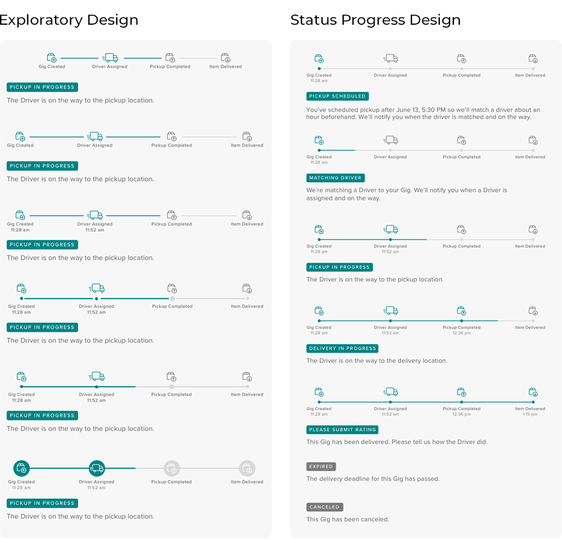

At Roadie, I redesigned their delivery tracking interface for an improved sender experience which was shipped within 4 weeks. I also designed a new onboarding experience of their driver app and worked on the Content Management tool that helps expedite the publishing of new business articles. I took UX Research initiative to design and deploy surveys to understand market opportunities for their new payment feature and determined 45% user engagement.
3 months - May ‘20 to Aug ’20
...
As a UX Design Intern, I worked on some of the most exciting projects that gave me the opportunity to put my design skills to practice and create a lasting impact on hundreds of thousands of users that use Roadie. A few of the projects that I worked on at Roadie have been discussed below.
Taking initiative, one of the first projects that I worked on was improving the sender experience when they have created a gig. I evaluated the existing design of the delivery page and found the following design issues.
Firstly, the interface lacked a status tracking sequence that shows the sender not only the previously completed states but also the ongoing states and the expected states for a delivery to be marked completed. For this, I designed multiple versions of the sequence and finalized one. For the selected sequence, I designed the various state as the delivery progressed from scheduling a pickup to completion. I also designed for the edge cases if the delivery wasn’t able to go through.
Incorporating the new status sequence, reorganizing the various sections and making a few design changes, I designed the new interface for the deliverage page.
After getting the design approval from various teams, I worked closely with the Development team and the Quality Assurance team to help ship the interface.
...
The marketing team at Roadie release new articles, update information, help guides and promotions on the Roadie platform for both senders and drivers. For this, the marketing team would reach out to the UX team and the Dev team to help implement it on their interface. Giving them the ability to function independently, I designed the Content Management tool for the Marketing team by building up on their existing design.
...
Towards the end of my internship, I focused on redesigning the onboarding experience of Roadie drivers. For this project, I started off by doing a competitor analysis to see what the onboarding experience looks like on other platforms. I designed the user flow for the new onboarding experience and designed high-fidelity interface for their mobile app. Currently, this project is under development. If you would like to see the Interface design, please reach out to me.
Available per request
...
As I look back at my internship experience at Roadie, I think of all the positive moments that I gained in this short amount of time. I got to work along side some of the most talented individuals in this industry. I’m thankful to them for trusting me with my design skills and giving me the opportunity to work on projects that were directly deployed into the real world. I learned to trust my design decisions. I realized I value feedback and actively seek it. I took initiatives and tried to make the most out of this internship experience. I collaborated with numerous teams at various stages of design and development. However, it was this message shared by the Product Lead of the company, that was the highlight of my 3 month long internship.
I will cherish this and all my other wonderful experiences at Roadie forever.